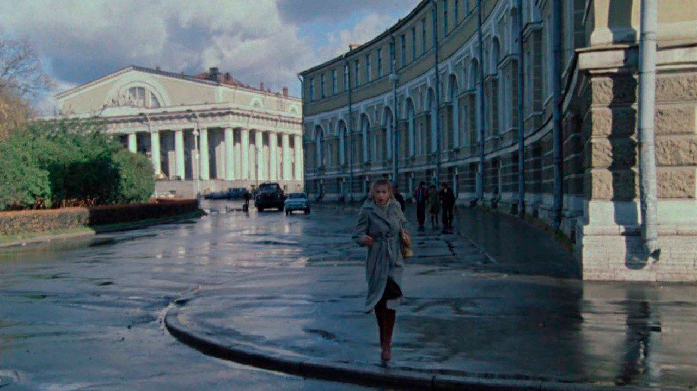
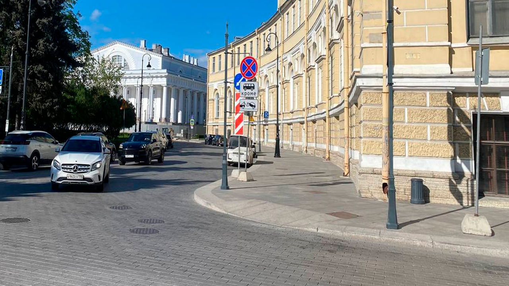
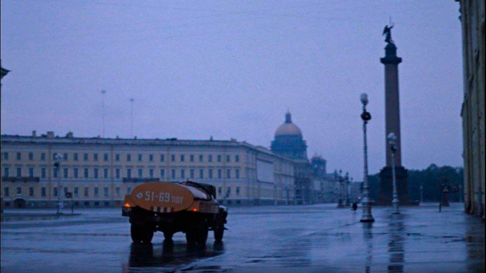
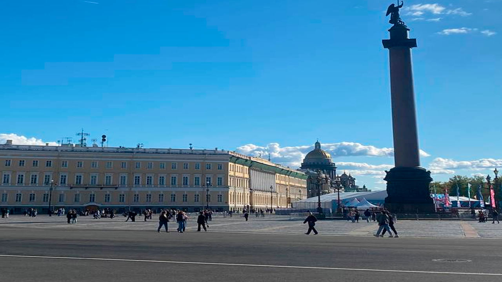
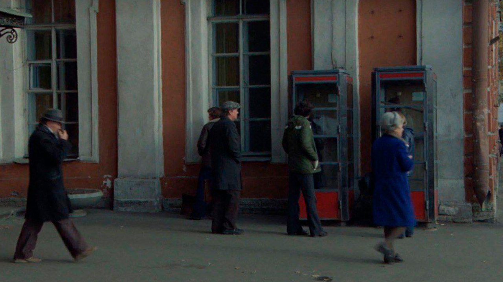
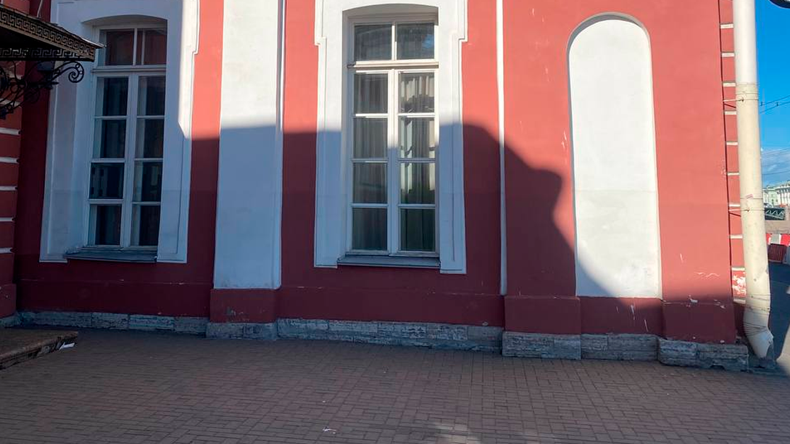
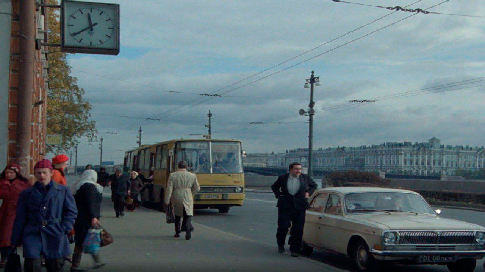
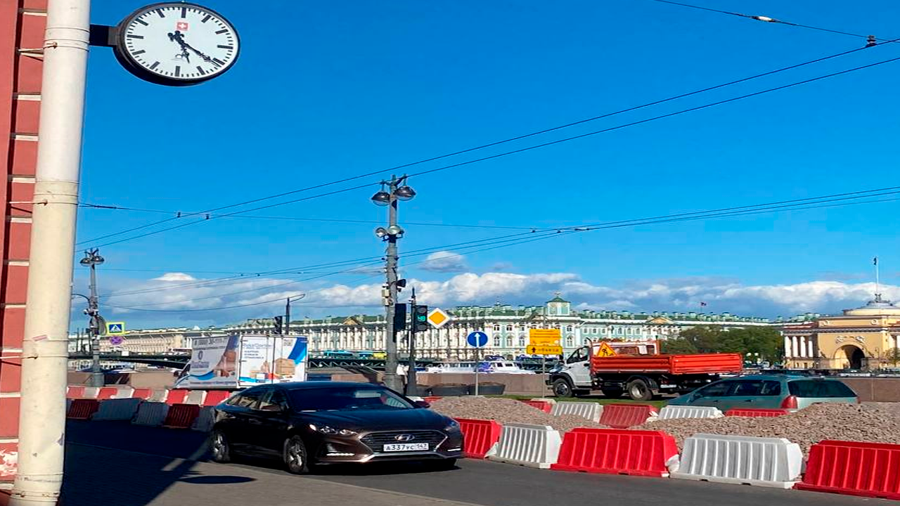

Осенний марафон (1979)
У талантливого педагога и переводчика Бузыкина нерешительный характер. Он не может оставить жену и уйти к любимой женщине, не может отказать эксплуатирующей его талант сокурснице, терпит посещения доморощенного философа-алкаша, а когда, наконец, решается на смелый шаг - терпит фиаско, так как по природе мягок и податлив, как воск.
Год производства: 1979
Жанр: драма, мелодрама, комедия
Режиссёр: Георгий Данелия
В главных ролях: Олег Басилашвили, Наталья Гундарева, Марина Неёлова
Рейтинг кинопоиска: 8.1